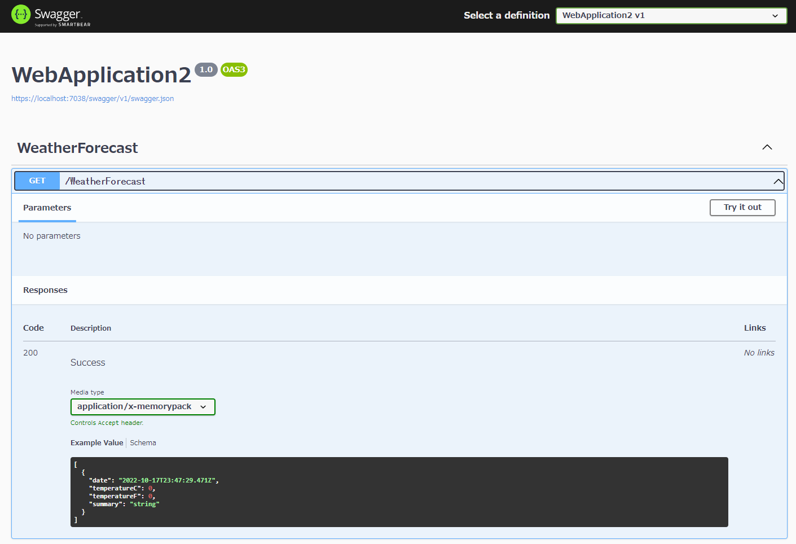

MemoryPack
使用方式见官网，此处仅记录使用中出现的问题
Cysharp发布了一个新的序列化器Cysharp/内存包，日文：memorypack：日文
MemoryPackOrder
没有必要不要使用，当存在继承关系时，中途修改某个字段的 Order 将导致编号错乱，不易维护
默认序列化是按照定义的属性或者字段的顺序来序列化的，如果要自定义属性或者字段的序列化顺序，可以使用 MemoryPackOrder
/*
使用 MemoryPackOrder
*/
[MemoryPackable(generateType: GenerateType.VersionTolerant, SerializeLayout.Explicit)]
public partial class TestData
{
[MemoryPack.MemoryPackOrder(1)]
public int Num { get; set; }
[MemoryPack.MemoryPackOrder(0)]
public string Name { get; set; }
[MemoryPack.MemoryPackIgnore]
public string NoSeriProp { get; set; }
}
- SerializeLayout.Explicit： 标识自定义布局
- 先序列化
Name，后序列化Num
注意事项： 在 ASP.NET 中使用时（HttpClient 网络传输），上述的结构没问题，但是如果不使用 MemoryPackOrder 时会报错，后面找到原因是必须给标记了 MemoryPackIgnore 属性的字段一个默认值才正常
/*
不使用 MemoryPackOrder
*/
[MemoryPackable]
public partial class TestData
{
public int Num { get; set; }
public string Name { get; set; }
[MemoryPack.MemoryPackIgnore]
public string NoSeriProp { get; set; } = string.Empty; //给定默认值
}
与 Asp.net Core 一起使用
基础
优点：
- 支持多态
- 包小
- 可以嵌套等
- 支持AOT(for unity)
使用默认设置（还包括 OpenAPI）创建 ASP.NET Core Web API (.NET 6-8) 项目。除了安装 MemoryPack 之外，还包括 ASP.NET Core 的包。
PM> Install-Package MemoryPack.AspNetCoreMvcFormatter
如下所示更改 Program.cs 中的 AddControllers。
builder.Services.AddControllers(options =>
{
options.InputFormatters.Insert(0, new MemoryPackInputFormatter());
options.OutputFormatters.Insert(0, new MemoryPackOutputFormatter(true));
});
将 WeatherForecast 类设为部分类并添加 MemoryPackable 属性。
[MemoryPackable]
public partial class WeatherForecast
{
public DateTime Date { get; set; }
public int TemperatureC { get; set; }
public int TemperatureF => 32 + (int)(TemperatureC / 0.5556);
public string? Summary { get; set; }
}

application/x-memorypack可以看到它已经被添加到 Media type 中了。
测试调用该方法

它作为 application/x-memorypack 返回。二进制数据按原样在响应正文中输出。 当然，如果将Media type改为JSON，也会返回可读的数据。
它可以很容易地转换成 MemoryPack。
顺便说一句，JSON 的主体大小约为 493 字节，MemoryPack 的主体大小约为 150 字节。


WeatherForecast 并不准确，因为数据是随机的，但它肯定更小。嗯，很自然，字段名字符串会随着记录数的减少而减少，所以如果有几十个字段，而且名称都很长，减少的效果会相当显着。
这是令人惊奇的，因为流经此过程的数据量减少了。
配置既可以接收Json和二进制文件
new MemoryPackOutputFormatter(true)
如果未使用 checkContentType=true 生成 OutputFormatter，MemoryPack 将接管所有输出处理，因此即使您指定 JSON，也会返回二进制文件，您会感到失望。
支持客户端TypeScript
服务端是 ASP.NET Core，客户端却是 React 或 Vue。 使用 GenerateTypeScript 特性，详见官网。
[MemoryPackable]
[GenerateTypeScript]
public partial class Person
{
public required Guid Id { get; init; }
public required int Age { get; init; }
public required string FirstName { get; init; }
public required string LastName { get; init; }
public required DateTime DateOfBirth { get; init; }
public required Gender Gender { get; init; }
public required string[] Emails { get; init; }
}
public enum Gender
{
Male, Female, Other
}
HttpClient 中解析异常
给标记MemoryPackIgnore的属性指定默认值
在使用 HttpClient 网络传输时，出现以下情况
- 当使用
MemoryPackOrder时，被标记MemoryPackIgnore的属性不给默认值，使用正常，如下：
/*
使用 MemoryPackOrder
*/
[MemoryPackable(generateType: GenerateType.VersionTolerant, SerializeLayout.Explicit)]
public partial class TestData
{
[MemoryPack.MemoryPackOrder(1)]
public int Num { get; set; }
[MemoryPack.MemoryPackOrder(0)]
public string Name { get; set; }
[MemoryPack.MemoryPackIgnore]
public string NoSeriProp { get; set; }
}
- 不使用
MemoryPackOrder时，被标记MemoryPackIgnore的属性不给默认值，使用异常，解析错误，必须如下给定一个默认值：
/*
不使用 MemoryPackOrder
*/
[MemoryPackable]
public partial class TestData
{
public int Num { get; set; }
public string Name { get; set; }
[MemoryPack.MemoryPackIgnore]
public string NoSeriProp { get; set; } = string.Empty; //给定默认值
}
List 属性异常
Ver 1.21.1
现象描述 ：定义一个类 A，从服务器获取 List<A> 时正常，从客户端向服务器 Post A 时失败，（这里没有验证从服务器获取 单个 A 和从客户端向服务器Post List<A> 的情况）
查找问题步骤 ：
- 若类中存在被标记为
MemoryPackIgnore的属性，确定给其指定了默认值 - 逐步将属性设置为 null 进行测试，如果都还有问题进行下一步
- 从新构建一个类，将原类中所有的属性拷贝过来，先进行一次测试，若存在问题，下一步
- 在构建的新类中，逐步删除复杂结构（List
,[],枚举，其他类或者数据结构）的属性进行测试
找到的原因 ：在 A 中类型为 List<B> 的属性，当存在数据时就会异常（根本原因不清楚），设置为null时就正常
解决办法 ：
- 看存在异常的属性在当前传中是否会使用到，如果未使用到将其设置为
null - 重新构建一个类，仅包含需要使用到的属性